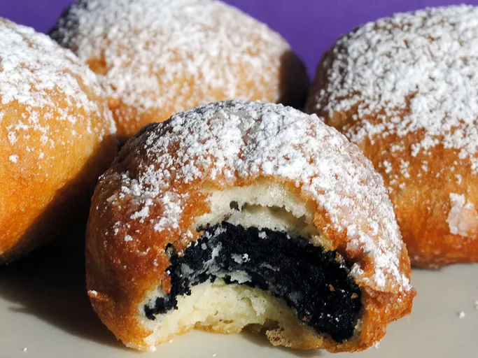

Deep-Fried Oreos

Description
This is a classic Southern carnival delight (that I have never tried) that's absolutely delicious! Let's jump in and get these things frying!
Ingredients
- 2 quarts vegetable oil
- 1 cup milk
- 1 large egg
- 1 (18 ounce) package of cream-filled chocolate sandwich cookies (such as oreos)
- 1 cup pancake mix
Steps
- Heat oil in a deep fryer or large saucepan to 375 degrees F (190 degrees C).
- Whisk milk, egg, and 2 teaspoons of vegetable oil in a large bowl until smooth. Stir in the pancake mix until no dry lumps remain.
- Dip cookies into batter, one at a time, and carefully place into hot oil. Fry in batches, 4 or 5 at a time, until cookies are golden brown, about 2 minutes. Drain on a paper towel-lined plate before serving.